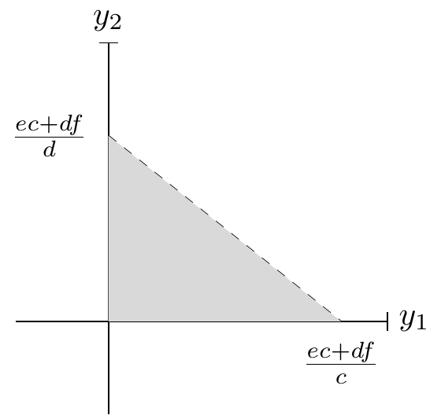
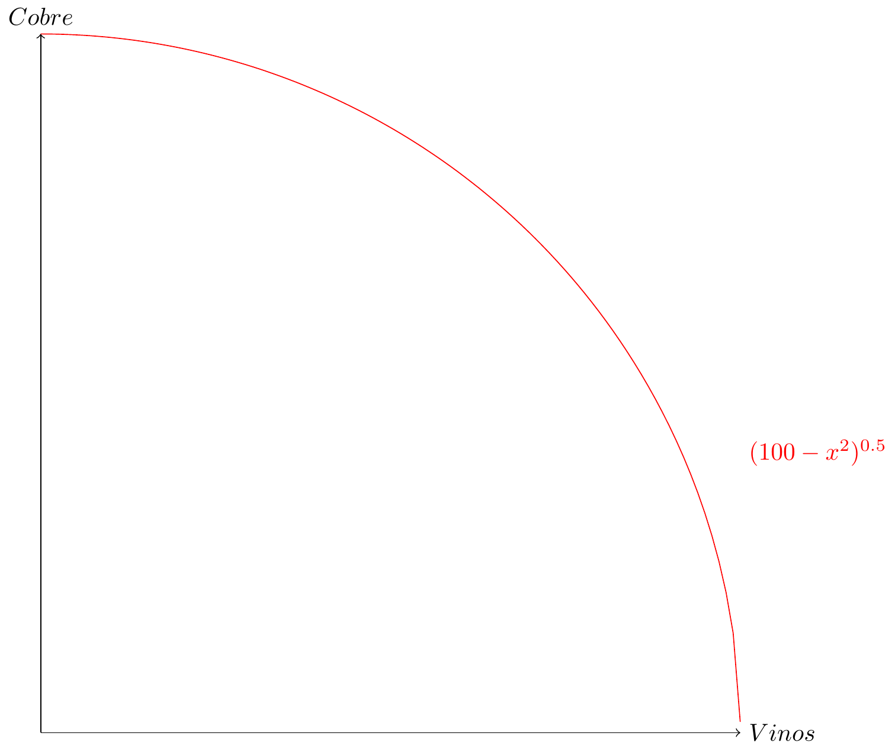
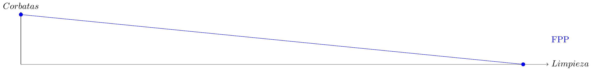
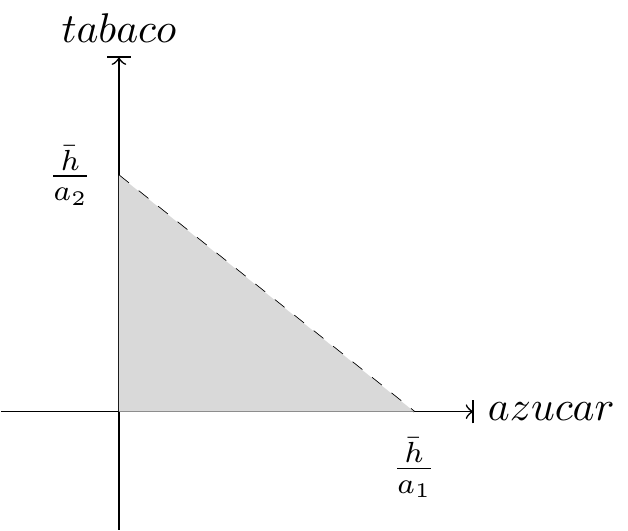
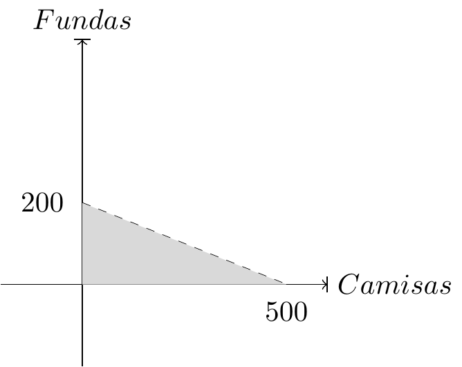
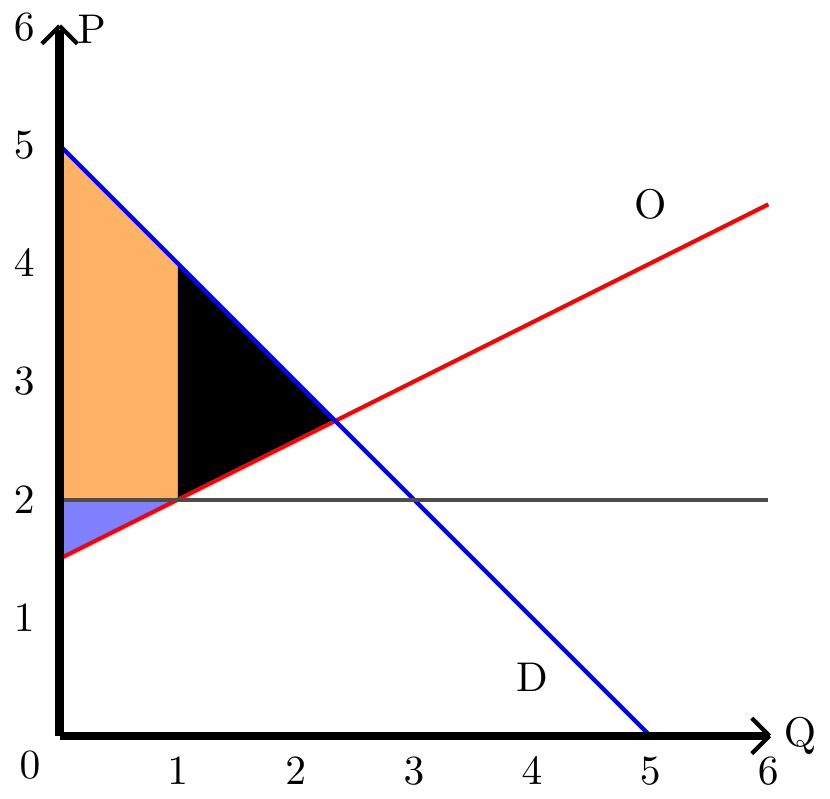
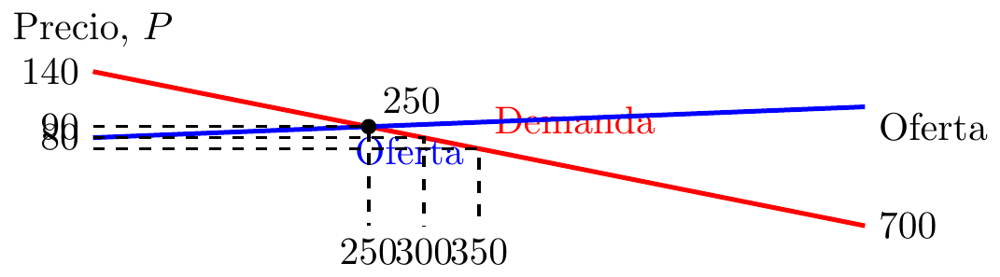
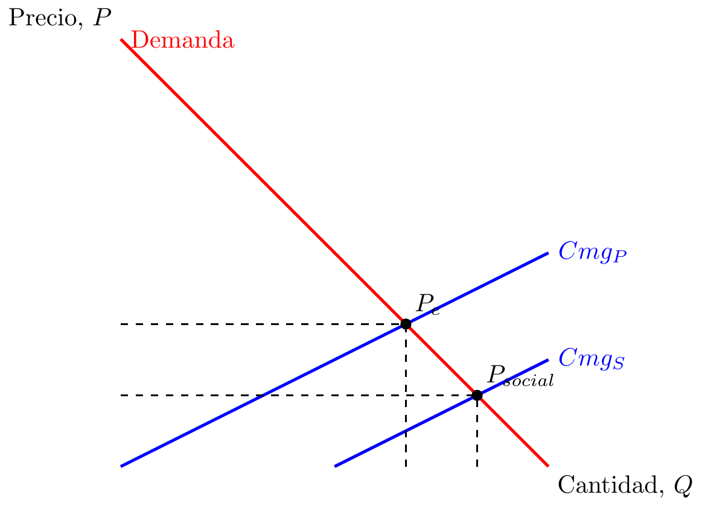

7 Ejercicios Resueltos:
En las siguientes paginas tendrás ejercicios con sus resoluciones.
7.1 Sobre capítulo I:
7.1.1 :
Un productor “\(A\)” de chocolate tiene como factor limitante el cacao, si quiere producir chocolate dulce necesita “\(c\)” de este bien por cada kg y si quiere producir chocolate amargo necesita “\(d\)” de este bien por cada kg. Para gastar todo su cacao necesita producir “\(e\)” kg de chocolate dulce y “\(f\)” de chocolate amargo.
- Haga la ecuación que represente las FPP.
RESPUESTA
Primero definimos \(y_1\) es el chocolate dulce, y el amargo es \(y_2\), luego: \[ \bar{x}=cy_1+dy_2 \]
Por la segunda parte del enunciado tenemos que: \[ \bar{x}=ec+df \]
Finalmente: \[ ec+df=cy_1+dy_2 \]
- Haga el gráfico de esta ecuación.
RESPUESTA
7.1.2 :
Una economía produce solo dos bienes, cobre y vino. Hay solo dos trabajadores y cada uno puede trabajar 10 horas diarias, en esas horas pueden producir 4 libras de cobre, o 6 litros de vino.
Dibuje la FPP individual y agregada.
Si se producen 50 litros de vino y 30 libras de cobre, ¿es eficiente? Si se producen 15 más de cada uno, ¿sería eficiente o alcanzable?
Ahora suponga que los trabajadores tienen capacidades diferentes, el primero puede producir 3 libras de cobre o 7 litros de vino, y el otro puede producir 5 libras de cobre o 4 litros de vino. Plantee las FPP individuales y luego la agregada.
Si de la ecuación \(x^2+y^2 = 100\) se obtiene la FPP. Explique por qué este ejemplo sería una generalización del caso anterior.
RESPUESTAS:
Con FPP individual se hace referencia a graficar la función de 1 trabajador. Ausumiendo linealidad, para poder graficar se necesita encontrar la pendiente.
\[m=\frac{4}{6}=\frac{2}{3}\] \[C: cobre ; V: Vino\] \[C=40-\frac{2}{3}\cdot V\]

Para la FPP agregada se incorporan todos los productores de la economía en el contexto. Asumiendo que ambos productores tienen la misma capacidad, se duplican las producciones:
\[C=80-\frac{2}{3}V\]

Asumiendo producción agregada. Se calcula si el punto de 50 V y 30 C se encuentra en la FPP.
\[C=80-\frac{2}{3}\cdot50 = 46,67 \Rightarrow 46,67 > 30\] Debido a que el punto se encuentra debajo de la curva de FPP, este punto es alcanzable pero ineficiente.
Ahora, si se producen 65 litros de vino y 45 libras de cobre: \[C=80-\frac{2}{3}\cdot65 = 36,67 \Rightarrow 36,67 < 45\] Debido a que este punto se encuentra sobre la curva de FPP, este es un punto inalcanzable.


Al observar el último gráfico realizado en la pregunta anterior, se logra entender como se comporta una economía en la realidad. No todos los productores tienen las mismas capcacidades, produciendo curvatura en la FPP agregada. Entonces, si se agregan cada vez más productores, se obtendría una función similar a \(x^2+y^2 = 100\):

7.1.3 :
Existe una economía que puede prestar servicios de limpieza y producir corbatas, la economía en total dispone de 1000 horas de trabajo. El servicio de limpieza les toma 1/2 hora y producir la corbata 5 horas.
- ¿Cuántos servicios de limpieza se pueden ofrecer si destinan todos los recursos y la fuerza laboral sólo a eso?
- ¿Cuántas corbatas se pueden producir si se destinan todos los recursos y la fuerza laboral sólo a eso?
- Dibuje la FPP.
- ¿Qué significa la pendiente de la FPP?
- Calcule el costo de oportunidad de pasar de 100 a 200 servicios de limpieza.
RESPUESTA:
\[L: limpieza ; C: corbata\] \[1000 \cdot 2 = 2000 corbatas en 1000 horas de trabajo\]
\[C \Rightarrow 5 \frac{horas}{corbata}\] \[\frac{1000 horas}{5\frac{horas}{corbata}}=200 corbatas\]
Asumiendo producción lineal:

La pendiente de una FPP significa el costo de oportunidad.
Primero, se escribe la función de la FPP: \[C=200-\frac{1}{10}L\] \[C(L=100)=200-\frac{1}{10}100=190\] \[C(L=200)=200-\frac{1}{10}200=180\] \[Costo de Oportunidad=190-180=10\]
7.1.4 :
Suponga que hay dos países, el país A y el B. Al país A le toma 2 horas laborales producir 1 kg de alimentos, y 10 horas laborales producir un computador, mientras que al país B le toma 10 horas producir los mismos alimentos y 12 horas producir el mismo computador. a) ¿Qué le diría a alguien que le dice “los habitantes del país A no tienen por que comerciar con los del país B, hacen lo mismo mucho más rápido”? b) ¿Cuál es el costo de oportunidad de producir 1 kg de alimento para el país A y B? ¿Y de vestuario?.
RESPUESTA:
País A: \[2 hrs \Rightarrow 1 kg alimento\] \[10 hrs \Rightarrow 1 computador\]
País B: \[10 hrs \Rightarrow 1 kg alimento\] \[12 hrs \Rightarrow 1 computador\]
Ventaja absoluta: Habilidad que se tiene para producir un bien usando menos insumos que otro productor. El país A tiene ventaja absoluta en la producción de ambos productos.
Ventaja comparativa: Habilidad para producir un bien con un costo de oportunidad menor que otro productor El país A al ser tan buen productor por hora, producir un producto en vez de otro en esa hora, produce un gran costo de oportunidad en relación a la cantidad producida. Mientras que el país B no tiene un costo de oportunidad mucho menor.
Debido a esto es que al país A, a pesar de tener ventaja absoluta, no tiene una ventaja comparativa superior a B por lo que si les conviene realizar comercio entre ellos.
Costo de oportunidad país A: 1 computador cuesta 5kg de alimento \[1 kg de alimento cuesta \frac{1}{5} computadores\]
Costo de oportunidad país B: \[1 computador cuesta 1,2 kg de alimento\] \[1 kg de alimento cuesta 0,833 computadores\]
A tiene ventaja comparativa en alimento mientras que B la tiene en computadores.
7.1.5 :
Carlos es un entrenador de fútbol que puede entrenar y producir sólo dos posiciones, defensas (D) y mediocampistas (M). Carlos puede producir 15 defensas por mes o 5 mediocampistas por mes.
Escribe la ecuación que describe la producción de Carlos. (Asuma relación lineal)
Suponga que Carlos no está produciendo mediocampistas este mes. ¿Cuál es el costo de oportunidad de aumentar su producción de mediocampistas de 0 a 2?
¿Cuál es el costo de oportunidad de producir cada defensa?
¿Cuál es el costo de oportunidad de producir cada mediocampista?
RESPUESTAS:
Asumiendo linealidad en la producción:

Entonces, la FPP de Carlos sigue la siguiente función: \[D=-3M+15\]
\[D(M=0)=-3(0)+15= 15 \] \[D(M=2)=-3(2)+15=9 \] El costo de oportunidad son 6 defensas.
Como se menciona la linealidad, el costo de oportunidad será constante a lo largo de toda la producción.
Entonces para encontrar el costo de oportunidad de producir los defensas es necesario entender la producción por el lado de los mediocampistas:
\[D=-3M+15 \leftrightarrow M=-\frac{1}{3}D+5\] \[M(D=0)=-\frac{1}{3}(0)+5=5\] \[M(D=1)=-\frac{1}{3}(1)+5=5-\frac{1}{3}\] \[C.O = 5-\frac{1}{3} - 5= -\frac{1}{3}\] El costo de oportunidad de producir cada defensa es de \(\frac{1}{3}\) mediocampistas.
\[D(M=0)=-3(0)+15=15\] \[D(M=1)=-3(1)+15=12\] \[C.O=15-12=3\] El costo de oportunidad de producir cada mediocampistas es de 3 defensas.
7.1.6 :
En el siguiente gráfico, podemos ver la cantidad de los bienes azúcar y tabaco que se pueden producir con el factor productivo limitado hectáreas.

Si la cantidad de hectáreas que se necesitan para producir una unidad de tabaco es \(a_2\) y de azúcar es \(a_1\), encuentre:
La cantidad de hectáreas asignadas a azúcar son \(h_1=36\) y la máxima producción posible equivale a \(9\) unidades. ¿Cuántas hectáreas se necesitan por unidad de azúcar?
Sabemos que \(a_2=12\), \(a_1=4\) y que la cantidad máxima de azúcar que se puede producir es \(144\). ¿Cuál es la cantidad máxima que se puede producir de tabaco?
En relación con los resultados de ``b”, encuentre la cantidad de tabaco que se produjo, si se producen \(3\) unidades de azúcar.
RESPUESTAS:
- Paso I: Escribir ecuación.
Genéricamente tenemos:
\[h_1(y_1)=a_1y_1\]
Donde $y_1$'' es la cantidad de azúcar que se produce,\(a_1\)’’ es la cantidad de hectáreas que se necesitan para producir una unidad de azúcar y ``h’’ es la cantidad de hectáreas disponibles.
Paso II: Reemplazar y resolver.
Lo que buscamos es cuantas hectáreas se necesitan para obtener una unidad de azúcar. Sabiendo que no se usaron para tabaco, entonces reescribimos los datos: \[36=9a_1\]
Al resolver nos damos cuenta que el resultado es que se necesitan \(4\) hectáreas para producir una unidad de tabaco.
Paso I: Escribir ecuación.
Genéricamente tenemos:
\[\bar h=a_1y_1+a_2y_2\]
Paso II: Remplazar las distintas situaciones y solucionar.
\[\bar h=a_1y_1 \Leftrightarrow \bar h=4*144=576\] \[h_2=a_1y_1 \Leftrightarrow 576=12y_1 \Leftrightarrow y_2=48\]
Entonces, se pueden producir máximo 48 unidades de tabaco.
Paso I: Escribir ecuación.
Genéricamente tenemos:
\[\bar h=a_1y_1+a_2y_2\]
Paso II: Reemplazar las distintas situaciones y solucionar.
\[\bar h=a_1y_1 + a_2y_2\Leftrightarrow \bar 576=4*3+12y_2 \Leftrightarrow 576=12+12y_2\] \[h_2= 576- 12 \Leftrightarrow 564=12y_1 \Leftrightarrow y_1=47\]
Entonces, si producimos \(3\) unidades de azúcar, se producen 47 unidades de tabaco.
7.1.7 :
Un musico reconocido acaba de lanzar un álbum, y un fan suyo es dueño de una empresa de textiles, le ofreció usar una tonelada de textiles para vender camisas con la carátula de su disco o fundas de cama con el símbolo de su grupo. Si para hacer una funda se necesitan 5 kilogramos y para hacer una camisa se necesitan 2 kilogramos, haga un gráfico de su FPP y exprese matemáticamente el problema.
RESPUETSA:
Paso I: Escribir ecuación.
Genéricamente tenemos:
\[\bar t=a_1y_1+a_2y_2\]
Donde $y_1$'' es la cantidad de fundas que se produce,\(a_1\)’’ es la cantidad de textiles que se necesitan para producir una unidad de funda y ``t’’ es la cantidad de textiles disponibles.
Paso II: Remplazar las distintas situaciones y solucionar.
\[\bar t=a_1y_1 \Leftrightarrow 1000=5y_1 \Leftrightarrow 20=y_1\]
Entonces, se pueden producir máximo 20 unidades de fundas.
\[\bar t=a_2y_2 \Leftrightarrow 1000=2y_2 \Leftrightarrow 20=y_2\]
Entonces, se pueden producir máximo 500 unidades de camisas.
Paso III: Hacer el gráfico.

7.2 Sobre capítulo II:
7.2.1 :
Sean Qo y Qd las ecuaciones de oferta y demanda de un bien X, respectivamente. \[Q_o = 50P-300\] \[Q_d=150-10P\] Calcule el precio y cantidad de equilibrio.
RESPUESTA: Para obtener el equilibrio de mercado del bien X, es necesario entender que en el equilibrio \(Q_o = Q_d=Q_{equilibrio}\) y \(P_o = P_d=P_{equilibrio}\). Entonces: \[Q_o = 50P-300\] \[Q_d=150-10P\] \[\Rightarrow 150 -10P=50P-300\] \[ \leftrightarrow 450=60P\] \[ \leftrightarrow 7,5=P_{equilibrio}\] \[\Rightarrow Q_o(P_{equilibrio})=Q_d(P_{equilibrio})=150 -10(7,5)=75\]
7.2.2 :
Calcule el precio oferido (\(P\)) de un bien para una producción de 7 unidades (\(b=7\)). Usted sabe que si no se producen unidades el precio oferido es de $1000. Adicionalmente, usted sabe que la función de oferta es lineal de la forma: \[P(Q)=a+250Q\]
Calcule cuál es la pendiente de una oferta lineal de un bien que vale $1.500 cuando se han producido 2 unidades y vale $1.000 cuando han producido 12 unidades.
Asuma una función de oferta igual a \(P(Q)=a+235Q\). Si Usted sabe que 17 unidades se valoran a un precio de 7820, ¿Cuál sería el precio de referencia si no se produce nada? %Diga cuánto vale un bien cuando su cantidad producida es 0, su pendiente es 235 y se han producido 17 unidades y actualmente vale 7820.
RESPUESTAS:
Para \(Q=0\) tenemos que \(P(0)=a+250\cdot 0=1000\). Luego sabemos que \(a=1000\). De esa forma, calculando \(P(7)=1000+250\cdot7=2750.\)
\[\begin{matrix} 1500 = a + b\cdot12 \\ 1000 = a + b\cdot2 \end{matrix}\]
\[500 = 10b\] \[b=50\] La pendiente es igual a 50.
\[7820=a+17\cdot235\] \[7820=a+3995\] \[a=3825\] El precio cuando no hay producción es igual a 3825
7.2.3 :
Defina el concepto de cantidad demandada y Ley de Demanda.
¿Por qué la curva de demanda tiene pendiente negativa?
¿Qué es un incremento en la demanda? De un ejemplo.
¿Qué es un decremento de la demanda? De un ejemplo.
Imagine que el promedio de los ingresos de la población chilena aumenta en un 1%. Esto produce una disminución en la demanda de la cerveza Cristal y un aumento en la demanda de cerveza Austral. ¿Qué tipo de bien es cada uno?
En el mercado de bebidas existen dos compradores, Felipe y Catalina. Catalina tiene una curva de demanda \(q = -p*(5/3) + 7\) y Felipe una curva de demanda de \(p= -q*(1/4) + 3\). A un precio de $2,5, ¿cuál es la cantidad demandada en el mercado?
RESPUESTAS:
La cantidad demandada es la cantidad de un bien que los compradores están dispuestos y tienen la capacidad de comprar. La ley de Demanda: si todo lo demás se mantiene constante, la cantidad de un bien disminuye cuando el precio de un bien aumenta.
Considerando que la curva de demanda se dibuja con la cantidad demandada en el eje x y el precio en el eje y. Esta tiene pendiente negativa ya que refleja el beneficio marginal del consumidor. El beneficio marginal, o ganas de pagar, del consumidor disminuye a medida que consumimos unidades adicionales ya que obtenemos menos satisfacción por cada producto adicional. Viéndolo por otro lado, si el precio de un bien disminuye, más personas están dispuestas a comprarlo.
Un incremento de la demanda es que la curva de demanda se desplace a la derecha, reflejando que, para todo precio de mercado, existirá una mayor cantidad demandada. Por ejemplo, un incremento en los precios de las bencinas incrementa la demanda de los autos eléctricos de cualquier precio.
Un decremento de la demanda es lo contrario el incremento, este es el desplazamiento a la izquierda de la curva de demanda, reflejando que, para todos los precios de mercado, la cantidad demandada disminuye. Por ejemplo, un aumento en las tasas de interés disminuye la cantidad demandada de las acciones.
Cristal es un bien inferior mientras que Austral es un bien normal.
Primero debemos tener ambas curvas de la misma forma: \[Catalina: q = -p \cdot (5/3) + 7\] \[Felipe: q = 12 - 4p\]
La cantidad demandada en un mercado es la suma de las cantidades demandadas por todos los compradores en cada precio. \[Q = q1 + q2 + q3 …. +qn\] Catalina: \[q= \frac{-2.5 \cdot 5}{3} + 7\] \[q= 2.83\] Felipe: \[q = 12 – 4 \cdot 2,5\] \[Q =4.83\]
7.3 Sobre el capítulo III:
7.3.1 :
Argentina por razones populistas, antes de las elecciones decidido fijar los precios de algunos bienes. A base de esto en un pueblo imaginario tiene el mercado del queso como funciones de oferta y demanda respectivamente \(P(Q)=1.5+0.5Q\) y \(Q(P)=5-P\). La fijación al precio máximo de este bien es de $2. ¿Qué fenómeno ocurrirá debido a esta intervención? Haga un gráfico de la situación.
RESPUESTA
La función de demanda inversa es \(P(Q)=5-Q\). Además, ocurrirá un escasez y el gráfico es el siguiente:

Donde el área negra es la escasez.
7.3.2 :
El mercado local de diesel está representado por:
\[Q = \frac{a-P}{12.5} \hspace{1cm} \text{ y} \hspace{1cm} Q = \frac{P-b}{11}\]
Donde \(P\) se encuentra en pesos chilenos ($) por litro de combustible y \(Q\) muestra los litros de combustible (en millones) que se transan en este mercado. Actualmente se cobra un impuesto de $130 por litro de diesel.
Se le pide calcular la cantidad Q que se transa después de aplicado el impuesto. Exprese su resultado con dos decimales.
Muestre detalladamente los cálculos del ejercicio anterior. ¿Hay diferencia entre el precio que observan oferentes y demandantes? Si es así, cuál es el precio que observa el productor y cuál es el precio que observa el consumidor? ¿A cuánto asciende la recaudación del gobierno? Si hay pérdida de eficiencia, ¿a cuánto asciende? Grafique.
En su cálculo, ¿aplicó el impuesto sobre el consumidor o sobre el productor? ¿Sería diferente el resultado si lo aplica al otro lado del mercado? ¿Por qué? Calcule la incidencia del impuesto y relaciónelo con la elasticidad precio propio de las curvas de oferta y demanda.
En la actualidad, hay argumentos a favor de aumentar el impuesto sobre el diésel y otros argumentos a favor de disminuir (al menos temporalmente) ese mismo impuesto. Mencione al menos un argumento que apoye el alza de este impuesto y uno que apoye la disminución del impuesto. Y finalmente, concluya a favor de qué argumento se encuentra usted.
RESPUESTAS:
Con un impuesto unitario \(\tau=\)$130, el precio que observan compradores y vendedores será diferente, tal que \(\tau=130=P_c - P_v\) donde \(P_c\) es el precio que observan y pagan los consumidores y \(P_v\) es el precio que observan y reciben los oferentes por cada litro de combustible. Si se aplica el impuesto sobre los compradores, se tiene \(P_c= P_v+\tau\) y reemplazando en la ecuación de la demanda para obtener el nuevo equilibrio: \[ \frac{a-P_v-\tau}{12.5}=\frac{P_v-b}{11}\] de donde \[P_v = \frac{11a+12.5b-11\tau}{11+12.5}\] \[Q^\prime=\frac{a-b-\tau}{23.5}\]
Sí, hay diferencia entre el precio que observan oferentes y demandantes. Por ejemplo, con \(a=900\), \(b=300\) y \(\tau=130\) antes del impuesto el equilibrio estaba dado por \(Q_0=25.53\) millones de litros a un precio de \(P_0=580.85\) por litro de diésel. Con el impuesto, el precio que reciben los oferentes por litro es de $520 (\(P_v\)), mientras que los consumidores pagan por litro $650 (\(P_c\)) y en el mercado se transa una menor cantidad que asciende a \(Q^\prime = 20\) millones. En este caso, la recaudación del gobierno es de $2.600 millones (\(\tau Q^\prime\)) y la pérdida de eficiencia es de $719,1 millones (\(\tau (Q_0-Q^\prime)\)).
El resultado es el mismo independientemente sobre quién se aplique el impuesto, puesto que finalmente la carga fiscal es compartida entre ambas partes del mercado (oferentes y demandantes). Sobre quién recae la mayor parte, depende de la sensibilidad ante los cambios en los precios del diésel (incidencia del impuesto), lo cual se calcula con la elasticidad precio propio de las curvas de oferta y demanda: \[|\varepsilon_D | =\frac{\partial Q}{\partial P} \frac{P}{Q}=|\frac{-1}{12.5} \frac{P}{Q}| < \frac{1}{11} \frac{P}{Q}=\frac{\partial Q}{\partial P} \frac{P}{Q}=\varepsilon_S\] En este caso, para cualquier par \((Q, P)\), la demanda es siempre más inelástica que la oferta. Es decir, es menos sensible a cambios en precios, lo cual hace que la incidencia fiscal recaiga en mayor medida sobre los consumidores. En este caso, del impuesto unitario de $130, los consumidores pagan $69,15 del impuesto por cada litro y los productores $60,85 por litro.
Argumentos para incrementar el impuesto: - disminuir el efecto de la externalidad negativa de la contaminación que genera su uso, (ii) progresividad del impuesto considerando que las familias de mayores ingresos son las tienen automóvil y hacen uso de este combustible y (iii) aumentar los ingresos del fisco considerando la necesidad de mayor gasto público por la pandemia. Argumentos para reducir el impuesto de forma temporal: - ayudar a las familias que han sufrido reducciones en el ingreso por la actual coyuntura de mayor desempleo, empresas con menores ingresos por medidas de confinamiento, etc. - incentivar la industria de transporte y el traslado en menores costos a otras empresas.
7.3.3 :
Tenemos un mercado donde su función oferta y demanda iniciales son respectivamente: \[P(Q)=5+\frac{3}{2}Q, \quad \quad P(Q)=13-\frac{1}{2}Q\] Luego sus funciones de oferta y demanda cambian respectivamente: \[P(Q)=2+Q, \quad \quad P(Q)=15-aQ\] a) Calcule el punto de equilibrio inicial.
b) ¿Cuánto tendría que valer “a”, para que este mercado se absolutamente inelástico?
c) Para el mismo caso, ¿Cuánto debería valer “a” para que su elasticidad sea unitaria?
RESPUESTAS:
Igualamos las funciones y calculamos “Q”: \[5+\frac{3}{2}Q=13-\frac{1}{2}Q\] \[2Q=8\] \[Q=4\]
A base de la cantidad, calculamos el precio. \[P(4)=13-\frac{1}{2}\cdot4\] \[P=11\]
Entonces el punto de equilibrio está en \((4,11)\).
Al ser absolutamente inelástica, “Q” debe tener el mismo valor en la situación final e inicial. Entonces: \[2+Q=15-aQ\] \[2+1\cdot 4 =15-a\cdot 4\] \[2+4-15=-4\cdot a\] \[9=4\cdot a\] \[a=2.25\]
Entonces para que a sea absolutamente inelástica, “a” tiene que valer 2,25.Para que su elasticidad sea unitaria, esta tiene que ser igual a 1, entonces formularemos la situación así: \[1 =\left|\frac{\triangle\%Q}{\triangle\%P}\right|\]
Simplificamos los “%”. \[1 =\left|\frac{\triangle Q}{\triangle P}\right|\]
Buscamos el valor de “Q”: \[2+Q=15-aQ\] \[Q+aQ=13\] \[Q=\frac{13}{1+a}\]
Y en relación con este, buscamos el valor de “P”: \[P=15-\frac{13a}{1+a}\]
Y finalmente formulamos: \[1 =\left|\frac{Q_i-Q_f}{P_i-P_f}\right|\] \[1 =\left|\frac{4-\frac{13}{1+a}}{11-15+\frac{13a}{1+a}}\right|\] \[1 =\left|\frac{4-\frac{13}{1+a}}{-4+\frac{13a}{1+a}}\right|\] \[1 =\left|\frac{\frac{4(1+a)-13}{1+a}}{\frac{13a-4(1+a)}{1+a}}\right|\] \[1 =\left|\frac{4+4a-13}{13a-4-4a}\right|\] \[1 =\left|\frac{4a-9}{9a-4}\right|\]
Como “a” está en la demanda expresada con un signo negativo, entonces \(a>0\).
Caso I: \[1 =\frac{4a-9}{9a-4}\] \[9a-4 =4a-9\] \[5a=-5\]
No se cumple por ser de valor negativo
Caso II: \[1 =-\frac{4a-9}{9a-4}\] \[9a-4 =-4a+9\] \[13a =13\] \[a =1\]
Se cumple.
Entonces a es igual a 1.
7.4 Sobre capítulo IV:
7.4.1 :
Sea el mercado nacional de novelas formado por: los lectores locales \(Q_D = 700 - 5P\) y los escritores locales \(Q_S = 25P - 2000\), donde \(P\) es el precio por libro y \(Q\) es la cantidad de libros. Además, el mercado está abierto al comercio internacional y las novelas de autores extranjeros tienen un precio de $70. Con esta información responda a las siguientes preguntas:
Calcule la cantidad de novelas escritas por autores nacionales y la cantidad de novelas escritas por autores extranjeros que los lectores locales comprarían. Calcule además el excedente total del mercado nacional.
Los escritores nacionales se organizan y deciden pedir apoyo del estado. ¿Qué argumentos cree que utilizarían?
Imagine que el estado acepta la petición de los escritores nacionales y decide fijar un arancel de $10 por libro importado. Calcule la recaudación que logra el estado y la pérdida de eficiencia que genera el arancel. ¿Por qué este arancel no ayuda en nada a los escritores locales?
Luego del fracaso del arancel, los escritores organizados nuevamente acuden al estado pero ahora con una propuesta concreta: eliminar por completo la importación de libros. ¿De qué tamaño debe ser el arancel para lograr esto? ¿Cuál sería la recaudación y cuál la pérdida de eficiencia si el estado aplica la propuesta?
RESPUESTAS:

Luego se tiene que \(Q_D = 700 - 5(70) = 350\). Novelas locales = 0 y novelas extranjeras = 350 \[ET = 350(70)\div2 = 12,250\]
Respuesta abierta. Podrían decir que no logran vender nada y hay que apoyar a la industria local: empleos, literatura local, etc.
Ahora \(P = 80 ==> Q_D = 700 - 5(80) = 300\), \(Q_S = 0\). la recaudación es \(R = 300(10) = 3,000\) El nuevo excedente total es ahora \(ET = 300(60)\div2 = 9,000\). La pérdida de eficiencia es \(PE = 12, 250 - 9, 000 = 3, 250\). No les ayuda en nada porque a $80 el libro extranjero, ellos aún no logran vender.
- El arancel debe ser tal que nadie quiera importar, es decir \(Q_D = Q_S: 700 - 5P = 25P - 2000\), de donde P = $90 y arancel= $20. Si nadie importa, la recaudación es nula. El excedente total es ahora \(ET = 250(60)\div2 = 7,500\) y la pérdida de eficiencia es \(PE = 12,250 - 7,500 = 4,750\).
7.4.2 :
Una empresa tiene costos totales dados por \(CT = {Q}^2 + 5Q + 36\), sabiendo esto calcule lo siguiente:
Función de costos marginales para la empresa.
Costo variable medio.
Costo toal medio.
Ahora repita los mismos calculos para un empresa con \(CF = 200\) y \(CV = 2{Q}^2 + 8Q\) en d,e,f.
RESPUESTAS:
Derivando la función de los costos totales obtenemos \(CMG = 2Q + 5\)
Para obtener el costo variable medio debemos separar los costos totales y fijos. Los costos fijos serían \(CF = 36\) y los costos variables \(CV = {Q}^2 + 5Q\). Para el costo variable medio hay que dividir por Q. Quedando así \(CVMe = \frac{{Q}^2+ 5Q}{Q} = Q + 5\).
Los costos totales medios son los costos totales divididos por Q. De esta forma quedaría: \[CTMe = \frac{{Q}^2 + 5Q + 36}{Q} = Q + 5 + \frac{36}{Q}\]
Para esta nueva empresa, armamos la función de costo total sumando los costos fijos más los variables. Obtenemos \(CT = 2{Q}^2 + 8Q + 200\). Derivamos respecto a Q y obtenemos los costos marginales \(CMg = 4Q + 8\).
Para los costos variables medios obtenemos \(CVMe = \frac{2{Q}^2 + 8Q}{Q} = 2Q + 8\).
Para los costos totales medios obtenemos \(CTMe = \frac{2{Q}^2 + 8Q + 200}{Q} = 2Q + 8 + \frac{200}{Q}\)
7.4.3 :
Imagine una empresa que vende parrillas. En su primer año vende 752 unidades, a un precio de $279 cada una. Para conocer su elasticidad, el segundo año de operación venden las mismas parrillas a $300 cada una, logrando vender 673 en total. ¿Cuál es su elasticidad de la demanda? ¿Qué puede decir sobre este bien?
RESPUESTA:
Para calcular la elasticidad de la demanda, es necesario saber la variación de la cantidad demandada respecto al precio. P y Q se reemplazan por los precios y cantidades promedio de los dos años. \(\epsilon = \frac{\vartriangle Q}{\vartriangle P} \cdot \frac{P}{Q}\). Reemplazando quedaría de la siguiente forma: \ \[\epsilon = \frac{752 - 673}{300 - 279} \cdot \frac{289,5}{712,5} = \frac{79}{21} \cdot \frac{289,5}{712,5} = 1,5\] Al obtener \(\epsilon > 1\), sabemos que estamos frente a una demanda elástica, y como también \(\epsilon > 0\), sabemos que es un bien normal.
7.4.4 :
Sean \(Q_s = \frac{100.000}{3} P\) y \(Q_d = 300.000 - \frac{100.000}{3} P\), las respectivas curvas de oferta y demanda de un bien. Considere que el gobierno quiere reducir su consumo en \(\frac{1}{3}\). Para eso decide gravar la producción con un impuesto por unidad vendida.
Calcule de cuanto debe ser el impuesto \(\tau\) para lograr su objetivo.
Si quieren lograr lo mismo pero a través de fijación de precios. ¿A cuanto deberían fijarlo? ¿Sería precio máximo o mínimo?
RESPUESTAS:
Para calcular el impuesto primero es necesario calcular el equilibrio sin intervención. Se obtiene el equilibrio \(P = 4,5\) y \(Q = 150.000\).
Al reducir la cantidad en \(\frac{1}{3}\) queda \(Q=100.000\), por lo que reemplazando ese valor de Q en la curva de demanda tendríamos \(P=6\).
La curva inversa de oferta es \(P = \frac{3}{100.000}Q\), si aplicamos el impuesto \(\tau\) la nueva curva queda de la forma: \[P = \frac{3}{100.000}Q + \tau\]
Sustituyendo el punto de equilibrio luego de la reducción en \(\frac{1}{3}\) obtenemos \(\tau = 3\).
- Si querían fijación de precios en lugar de impuestos debían haber fijado el precio mínimo del bien en 6, lo que no hubiera tenido mucho sentido ya que el equilibrio está por debajo de ese precio.
7.4.5 :
Un grupo de pescadores de la X región se encuentra muy contento durantes estos últimos días. En los periódicos ha aparecido la noticia que el compuesto denominado “f” provoca un aceleramiento en el crecimiento de la anchoveta, un pez característico de la región. La buena noticia es que dicho compuesto es eliminado al mar por la compañía salmonera “Buen Salmón S.A.” al momento de realizar sus procesos de elaboración de salmón enlatado, lo cual ha traído como consecuencia un aumento del número de anchovetas pescadas durante las últimas semanas. Se ha realizado un estudio el cual ha estimado que el impacto positivo de la producción de salmones enlatados sobre la pesca de anchovetas está dada por \(f(q) = \frac{bq^2}{4}\) donde “q” es la cantidad de latas producidas por “Buen Salmón SA”. La función de costos de la firma salmonera es \(C(q) = a + bq^2\) y la demanda de mercado es \(P(q) = a - cq\) Suponga competencia perfecta.
¿Cuánto produce y a qué precio la firma salmonera
El encargado de pesca del conglomerado de pescadores atribuye el aumento de la cantidad extraída de anchovetas a su excelente gestión, y en base a esto solicita al grupo un aumento de su sueldo. ¿Se merece el aumento el encargado? Argumente claramente su respuesta
¿Cuál es el óptimo social de producción de la firma salmonera? Grafique y explique.
RESPUESTAS:
Se tiene que: \[f_{(q)}=\frac{bq^{2}}{4}\] Esta ecuación representa el valor que se le da a la externalidad. La siguente función representa los costos totales
\[C_{(q)}= a + bq^{2}\]
Sigue que,
En competencia perfecta \[P = Cmg\] \[a - cq = 2bq\] \[Q=\frac{a}{2b+c}\] \[P=\frac{2ab}{2b+c}\]
No merece el aumento, ya que el incremento de la extracción de anchovetas no se debe a su gestión, sino a la externalidad positiva que genera la empresa.
\[C_{(q)}= a + bq^{2}-\frac{bq^{2}}{4}\] \[Cmg_{(q)}= 2bq-\frac{{bq}}{2}= \frac{{3bq}}{2}\] y con la condición de competencia perfecta \[P = Cmg\] \[a - cq = \frac{{3bq}}{2}\] \[{q*(\frac{{3b}}{2} + c)} = a \]

7.5 Sobre capítulo V:
7.5.1 :
En una economía, sólo se producen celulares y computadores. En la cuál se produjo lo siguiente en los años 2016, 2017 y 2018:
RESPUESTAS:
- Calcular el PIB nominal para los años 2016, 2017, 2018.
Recordar que el PIB nominal se calcula con: \[ \sum q\cdot p \]
Dado esto tenemos:
Para el año 2016: \[ 150\cdot 100 + 100 \cdot 50 = 40000 \]
Para el año 2017: \[ 200\cdot 200 + 120 \cdot 70 = 48400 \]
Para el año 2018: \[ 250\cdot 300 + 150 \cdot 100 = 90000 \]
- Calcular el PIB real para los mismos años utilizando como año base el 2016.
Recordar que el PIB real se calcula con: \[ \sum q_t\cdot p_{\text{año base}} \]
Dado esto tenemos:
Para el año 2016:
\[ 150\cdot 100 + 100 \cdot 50 = 40000 \]
Para el año 2017:
\[ 150\cdot 200 + 100 \cdot 70 = 37000 \]
Para el año 2018:
\[ 150\cdot 300 + 100 \cdot 100 = 55000 \]
- Calcular el deflactor del PIB para los tres años mencionados anteriormente.
Recordar que el deflactor del PIB se calcula con: \[ \frac{\text{PIB nominal}}{\text{PIB real}} \]
Para el año 2016: \[ \frac{40000}{40000}=1 \]
Para el año 2017: \[ \frac{48400}{37000}=1.3 \]
Para el año 2018: \[ \frac{90000}{55000}=1.63 \]
- Calcular la tasa de inflación del mercado, utilizando el año 2016 como base.
Recordar que la tasa de inflación anual en los distintos años se calula con: \[ \frac{Def_{t}}{Def_{t-1}}-1 \]
Para el año 2016: \[ 0\% \]
Para el año 2017: \[ \frac{1.3}{1}-1=30\% \] Para el año 2018: \[ \frac{1.63}{1.3}-1=25\% \]
7.5.2 :
Preguntas de concepto:
Si los precios no cambian durante un periodo dado, el PIB nominal y el PIB real deberían coincidir. ¿Verdadero o falso?
Un aumento en la población total va a aumentar el PIB per cápita de un país. ¿Verdadero o falso?
El PIB es una medida perfecta del bienestar de las personas. ¿Verdadero o falso?
RESPUESTAS:
VERDADERO. Ambas medidas incluyen cantidad y precio, pero el PIB real toma el precio de un periodo determinado, y el PIB nominal toma en cuenta el precio corriente. Si los precios no cambian entre el periodo de referencia del PIB real y el periodo corriente, entonces ambos coinciden.
FALSO. No necesariamente. Considerando que el \(PIB_{pc}=PIB/(Población Total)\) es posible afirmar que un aumento en la población total va a traer como consecuencia una disminución en el PIB pc de un país. Siempre y cuando el PIB se mantenga constante.
FALSO. EL excluye cosas importantes como los tiempos de ocio, los bienes y servicios del hogar y tampoco explica la distribución de riqueza en el país y como ese PIB per capita realmente se destribuye en un ciudadano promedio. Pero, igualmente el PIB es considerado como una buena medida del bienestar económico ya que existe una correlación fuerte entre aquellos países con PIB alto y buena salud, educación, innovación, entre otros.
7.5.3 :
En un país imaginario, la canasta básica es considerada como 2 kilos de queso, 2 pares de jeans y 10 litros de bencina.
- Con esa información complete la siguiente tabla:
| Año 1 | Año 2 | Año 3 | |||||
| Items Canasta | Unidades | $ unidad | $ Total | $ unidad | $ Total | $ unidad | $ total |
| Queso | 2 kg | 5000 | 5132 | 5500 | |||
| Jeans | 2 pares | 20000 | 25000 | 30000 | |||
| Bencina | 10 litros | 890 | 1100 | 1200 | |||
| Costo Total | 34,8 | 154 | |||||
Calcule el IPC para cada año, eligiendo el año 1 como base.
Utilizando el IPC calcule la tasa de inflación para cada año.
RESPUESTAS:
| Año 1 | Año 2 | Año 3 | |||||
| Items Canasta | Unidades | $ unidad | $ Total | $ unidad | $ Total | $ unidad | $ total |
| Queso | 2 kg | 5000 | 10000 | 5132 | 10264 | 5500 | 11000 |
| Jeans | 2 pares | 20000 | 40000 | 25000 | 50000 | 30000 | 60000 |
| Bencina | 10 litros | 890 | 8900 | 1100 | 11000 | 1200 | 12000 |
| Costo Total | 58900 | 71264 | 83000 | ||||
El Índice Precio al Consumidor es una medida del costo total de los bienes y servicios comprados por un consumidor típico.
Año 1 \[IPC = \frac{58900}{58900}*100= \%100\]
Año 2 \[IPC = \frac{71264}{58900}*100=\%120.99\]
Año 3 \[IPC = \frac{83000}{58900}*100=\%140.90\]
La tasa de inflación es el cambio porcentual en el índice de precios con respecto al periodo precedente.
Año 1 \[IPC = \frac{100-100}{100}*100= \%0\]
Año 2 \[IPC = \frac{120.99-100}{100}*100=\%20.99\]
Año 3 \[IPC = \frac{140.90-120.99}{120.99}*100=\%16.45\]
7.5.4 :
- Un país tiene solo los mercados de la siguiente tabla:
| Rubro | Cantidad producida | Valor por unidad |
| Venta de autos importados | 20 | $120 |
| Producción de harina para mercados nacionales | 400 | $10 |
| Producción minera | 1000 | $80 |
| Producción de harina para exportaciones | 1200 | $15 |
Indique cuanto es la cantidad del PIB.
- Sin tomar en cuenta la pregunta anterior, tenemos otro país con los siguientes datos:
| Año | PIB nominal | PIB real |
| Actual | $30 | $31 |
| Base | $25 | $30 |
Calcule su Inflación por el deflactor del PIB.
RESPUESTAS:
De todos los rubros el unico que no pertenece a la categoría del PIB es la venta de autos importados. Por los demás, se multiplica la unidad por su valor y se suma con el resto.
\[400\cdot10+1000\cdot80+1200\cdot15=102000\]
Primero calculamos los deflactores:
Para el actual: \(30/31\).
Para el base: \(5/6\)
Luego calculamos la inflación:
\[Inflación:\frac{\frac{30}{31}-\frac{5}{6}}{\frac{5}{6}}=\frac{36}{31}-1=\frac{5}{31}=\%16.13\]
7.5.5 :
Suponga un mercado con las siguientes funciones de oferta y demanda laboral: \[L_s=10+10w\] \[L_d=100-5w\]
Encuentre el nivel de equilibrio.
Suponga la fijación de un salario igual a 10 y determine que pasará en ese mercado.
RESPUESTA:
Para resolver esto primero debemos encontrar el equilibrio, lo cual nos da \(L = 70\) y \(w = 6\). Si reemplazamos el salario mínimo impuesto en ambas funciones, vemos que la demanda de trabajo sería \(L_d=50\) y la oferta \(L_s=100\). Es decir, habrían 110 personas dispuestas a trabajar y sólo 50 puestos demandados. El desempleo sería: \[L_s - L_d = 110 - 50 = 60\]
7.5.6 :
El 2014 es el año base para el cálculo del ́Índice de Precios al Consumidor. A partir de la siguiente tabla calcule:
| 2014 | 2015 | 2016 | |
| Precio de celular | $800.000 | $820.000 | $850.000 |
| Precio del tomate | $300 | $450 | $500 |
| Precio de zapatos | $50.000 | $45.000 | $55.000 |
| Cantidad de celular | 1 | 1 | 1 |
| Cantidad del tomate | 200 | 200 | 200 |
| Cantidad de zapatos | 4 | 4 | 4 |
El ́Índice de Precios al Consumidor para cada año (2014, 2015 y 2016).
Calcule la inflación (variación de precios) anual 2015-2016 y 2014-2015.
Ahora usted le presta \(30.000\) a su amigo, quien se compromete a devolver \(32.000\) al cabo de un año, en este caso el 31 de diciembre de 2016.
¿Cuál es la tasa de interés nominal que su amigo está dispuesto a pagarle?
¿Cuál es la tasa de interés real? Nota: Tenga en cuenta la inflación anual 2015-2016
- Ahora suponga que usted le presta a su amigo en UF. Cuando usted le prestó el dinero a su amigo, la UF era de \(25.000\). Si su amigo se compromete a pagarle la misma tasa de interés nominal del ejercicio anterior y devolverle el dinero un año después, ¿cuánto dinero recibe usted al cabo de un año?
RESPUESTAS:
\[\textbf{Costo de vida 2014} = 800.000*1+300*200+50.000*4 = 1.060.000\] \[\textbf{Costo de vida 2015} = 820.000*1+450*200+45.000*4 = 1.090.000\] \[\textbf{Costo de vida 2016} = 850.000*1+500*200+55.000*4 = 1.170.000\]
\[IPC_{2014} = \frac{1.060.000}{(1.060.000)*100} = 100\] \[IPC_{2015} = \frac{1.090.000}{(1.060.000)*100} = 102.8\] \[IPC_{2016} = \frac{1.170.000}{(1.060.000)*100} = 110.4\]
\[\textbf{Variación Precios 2015/2014} = (\frac{ 102.8}{100}-1)*100 = 2,83 \%\] \[\textbf{Variación Precios 2016/2015} = (\frac{110.4}{102.8}-1)*100 = 7.34 \%\]
La tasa de interés nominal que su amigo estará pagando será la relación entre lo prestado y lo que finalmente le pagará.
Tasa de interés nominal = \((\frac{32000}{30000}– 1)\cdot 100 = 6.66\%\)
La tasa de interés real representa cuanto realmente estarás ganado al prestarle dinero a tu amigo. Ya que aunque la tasa de interés nominal es mayor a 0, si la tasa de inflación de ese año será mayor o igual a la nominal, no existe una ganacia real en ese préstamo.
Tasa de interés real = tasa de interés nominal – inflación Tasa de interés real = \(6.66 – 7.34 = -0.68\%\)
Debido a que la tasa de inflación es real a la nominal, al hacer este préstamo, el valor de tu dinero disminuye.
Prestamo en UF = \(\frac{30,000}{25,000} = 1.2 UF\) Pago en un año = \(1.2\times(1 + 6.66 \%) = 1.28\) En un año la UF = \(25,000\times(1 + 7.34 \%) = 26,834.9\) Pago efectivo = \(1.28\times26,834.9 = 34,348.5\)
7.5.7 :
Tenemos la siguiente tabla que representa el porcentaje de población acumulado de la población según su ingreso porcentual acumulado:
| decil: | Ingresos: |
| 0.1 | 0.01 |
| 0.2 | 0.02 |
| 0.3 | 0.03 |
| 0.4 | 0.05 |
| 0.5 | 0.06 |
| 0.6 | 0.08 |
| 0.7 | 0.14 |
| 0.8 | 0.58 |
| 0.9 | 0.80 |
| 1 | 1 |
Calcule el coeficiente de Ginni.
RESPUESTA:
\[G=1-\left|\sum_{k=0}^{n-1}\left(X_{k+1}-X_k\right)\left(Y_{k+1}+Y_k\right)\right| \]
\[1-0.1(0.01+(0.01+0.02)+(0.02+0.03)+(0.03+0.05)+(0.05+0.06)+(0.06+0.08))+\] \[0.1((0.08+0.10)+(0.10+0.50)+(0.50+0.8)+(0.8+1))\] \[=\] \[1-0.1\cdot 4.3\] \[1-0.43\] \[0.57\]
7.5.8 :
Suponga que tanto las papas fritas como el ketchup son mercados monopólicos. Las funciones de costo total son, respectivamente \(CT_{PF}=10\cdot q_{PF}\) y \(CT_{K}=5\cdot q_{K}\) Las demandas respectivas se pueden expresar como: \(P_{PF}=100 - q_{PF}\) y \(P_{K}= 80 - q_{K} + q_{PF}\). Si es que cada bien es producido por monopolistas separados, determine los precios y cantidades de cada uno.
RESPUESTA:
El monopolista de papas fritas produce una cantidad de papas fritas tal que maximicen su utilidad:
\[\pi_{PF}= P_{PF}\cdot q_{PF} - CT_{PF}\] \[\pi_{PF}= (100 - q_{PF})\cdot q_{PF} - 10\cdot q_{PF}\] \[ pdv = \frac{\pi_{PF}}{q_{PF}}=0= 100-2\cdot q_{PF} - 10\] \[q_{PF} = 45\] \[P_{PF} = 55\]
Con este resultado, podemos encontrar el óptimo del monopolista del ketchup\
\[\pi_{K}= P_{K}\cdot q_{K} - CT_{K}\] \[\pi_{K}= (80 - q_{K} + q_{PF} )\cdot q_{K} - 5\cdot q_{K}\] \[\pi_{K}= 80\cdot q_{K} - q_{K}^2 + q_{PF}\cdot q_{K} - 5\cdot q_{K}\] \[\pi_{K}= 80\cdot q_{K} - q_{K}^2 + 45\cdot q_{K} - 5\cdot q_{K}\] \[\pi_{K}= 120\cdot q_{K} - q_{K}^2\] \[pdv = \frac{\pi_{K}}{q_{K}}=0= 120-2\cdot q_{K}\] \[q_{K} = 60\] \[P_{K} = 65\]
7.5.9 :
Suponga que tanto las papas fritas como el ketchup son mercados monopólicos. Las funciones de costo total son, respectivamente \(CT_{PF}=10\cdot q_{PF}\) y \(CT_{K}=5\cdot q_{K}\)\ Las demandas respectivas se pueden expresar como: \(P_{PF}=100 - q_{PF}\) y \(P_{K}= 80 - q_{K} + q_{PF}\)
Si es que cada bien es producido por monopolistas separados, determine los precios y cantidades de cada uno.
Asuma ahora que ambas empresas desean integrarse en una sola y monopólica, determine los precios y cantidades para cada bien.\
¿Cuál es mejor desde un punto de vista social? ¿Por qué?
RESPUESTAS:
El monopolista de papas fritas produce una cantidad de papas fritas tal que maximicen su utilidad:
\[\pi_{PF}= P_{PF}\cdot q_{PF} - CT_{PF}\] \[\pi_{PF}= (100 - q_{PF})\cdot q_{PF} - 10\cdot q_{PF}\] \[pdv {\pi_{PF}}{q_{PF}}=0= 100-2\cdot q_{PF} - 10\] \[q_{PF} = 45\] \[P_{PF} = 55\]
Con este resultado, podemos encontrar el óptimo del monopolista del ketchup.
\[\pi_{K}= P_{K}\cdot q_{K} - CT_{K}\] \[\pi_{K}= (80 - q_{K} + q_{PF} )\cdot q_{K} - 5\cdot q_{K}\] \[\pi_{K}= 80\cdot q_{K} - q_{K}^2 + q_{PF}\cdot q_{K} - 5\cdot q_{K}\] \[\pi_{K}= 80\cdot q_{K} - q_{K}^2 + 45\cdot q_{K} - 5\cdot q_{K}\] \[\pi_{K}= 120\cdot q_{K} - q_{K}^2\] \[pdv {\pi_{K}}{q_{K}}=0= 120-2\cdot q_{K}\] \[q_{K} = 60\] \[P_{K} = 65\]
Si ambos bienes se producen por sólo uno de los monopolistas, entonces el problema que enfrenta ahora es:
\[\pi= P_{PF}\cdot q_{PF} + P_{K}\cdot q_{K} - CT_{K} - CT_{PF}\] \[\pi= (100 - q_{PF})\cdot q_{PF} + (80 - q_{K} + q_{PF} )\cdot q_{K} - 10\cdot q_{PF} - 5\cdot q_{K}\] \[\pi= 100\cdot q_{PF} - q_{PF}^2 + 80\cdot q_{K} - q_{K}^2 +q_{PF}\cdot q_{K} - 10\cdot q_{PF} - 5\cdot q_{K}\] \[\pi= 90\cdot q_{PF} + 75\cdot q_{K} + q_{PF}\cdot q_{K} - q_{PF}^2 - q_{K}^2 \]
\[pdv {\pi}{q_{PF}}=0= 90 + q_{K} - 2\cdot q_{PF}\] \[pdv {\pi}{q_{K}}=0= 75 + q_{PF} - 2\cdot q_{K}\]
\[q_{PF} = \frac{255}{3}= 85\] \[q_{K} = 80\] \[P_{PF} = 15\] \[P_{K} = 65\]
- ¿Cuál es mejor desde un punto de vista social? ¿Por qué?
\[BS_{Integrado}= EP_{Integrado} +EC_{Integrado} \] \[EP_{Integrado}= 85\cdot 15 - 85\cdot 10 + 100\cdot 65 -100\cdot 5 = 6425 \] \[EC_{Integrado}= \frac{85\cdot 85}{2} +\frac{100\cdot 100}{2} = 8612.5\] \[BS_{Integrado}= 15037.5 \]
\[BS_{PF} = EP_{PF} + EC_{PF} =55\cdot45 -45\cdot10 + \frac{45\cdot 45}{2} = 3037.5\]
\[BS_{K} = EP_{K} + EC_{K} = 60\cdot65 -60\cdot5 + \frac{60\cdot 60}{2} = 5400\]
\[BS_{Integrado}= 8437.5 \]
La integración de ambos monopolios es positiva desde el punto de vista social. Esto se debe a que ambos productos son complementarios
###:
Considere una economía en la cual se tiene el siguiente detalle de los bienes producidos o importados por sus habitantes.
| Bien | Categoria |
| Pan | Producido |
| Vino | Producido |
| Autos | Importado |
| Cobre | Producido |
¿Cuáles son los bienes que se consideran para el cálculo del pib?\
¿Cuáles son los bienes que se consideran para el cálculo del IPC?\
c)¿ Por qué la inflación difiere cuando se usa el Deflactor o el IPC ?\
RESPUESTAS:
Solo se consideran los bienes producidos: Pan,Vino y Cobre\
Ahora se considera el bien “Autos” ya que es un bien dentro de la canasta de consumo, pero no se considera el bien “Cobre” puesto que no es consumido
La inflación difiere cuando se usa el Deflactor o el IPC porque ambos indicadores miden cosas distintas. El Deflactor considera todos los bienes producidos dentro de la economía, los cuales no todos son necesariamente consumidos por las personas. Por lo tanto, si se quiere analizar el costo de la vida, es mejor usar el IPC para medir la inflación dado que en el IPC se usa una canasta de consumo representativa. Con respecto a críticas de ambas formas para medir la inflación, se tiene que al medirla por el lado del Deflactor no se refleja de forma precisa variaciones en el costo de vida. Mientras que una crítica al usar el IPC para medir la inflación es el sesgo de sustitución: el IPC no incorpora el efecto sustitución por el lado de los consumidores cuando sube el precio de un bien dentro de la canasta de consumo.
7.5.10 :
En el país X se consumen solamente arroz, pantalones y celulares. El arroz y los pantalones son producidos y consumidos en X. Por otro lado, los celulares son importados desde el país Y.
| Año 1 | Año 2 | Año 3 | ||||
| Productos | cantidad | $ unidad | cantidad | $ unidad | cantidad | $ unidad |
| Arroz | 160 | 480 | 320 | 158 | 156 | 410 |
| Pantalones | 180 | 435 | 410 | 160 | 652 | 352 |
| Celulares | 185 | 420 | 420 | 140 | 410 | 586 |
Calcular el PIB Nominal.
Calcular el PIB Real con el año 2 como base.
Calcular la tasa de crecimiento del país.
Calcular el deflactor del PIB para cada año y la tasa de inflación para cada año.
RESPUESTAS:
\[PIB_{1}= 160x480+320x158= 76800+ 50560= 127360\] \[PIB_{2}= 180x435+410x160= 78300+65600= 143900\] \[PIB_{3}= 185x420+420x140= 77700+58800= 136500\]
\[PIBreal_{1}= 160x435+320x160= 69.600+51.200= 120800 \] \[PIBreal_{2}= 180x435+410x160= 78300+65600= 143900 \] \[PIBreal_{3}= 185x435+420x160= 80475+ 67200= 147675 \]
\[Tasa_{año1-2}=\frac{143900 − 120800}{120000}*100 = 19,25 \% \] \[Tasa_{año2-3}=\frac{147675 − 143900}{143900}*100 = 2,62\% \]
\[Deflactor_{año1} = \frac{127360}{120800}=1,05\] \[Deflactor_{año2} = \frac{143900}{143900}=1\] \[Deflactor_{año3} = \frac{136500}{147675}=0,92\]
Inflación: \[\frac{1 - 1,05}{1,05}*100 = -47,61\%\] \[\frac{0,92 - 1}{1}*100 = -8 \%\]
7.5.11 :
Tenemos la siguiente tabla que representa el porcentaje de población acumulado de la población según su ingreso porcentual acumulado:
| decil: | Ingresos: |
| 0.1 | 0.01 |
| 0.2 | 0.02 |
| 0.3 | 0.03 |
| 0.4 | 0.04 |
| 0.5 | 0.05 |
| 0.6 | 0.06 |
| 0.7 | 0.10 |
| 0.8 | 0.15 |
| 0.9 | 0.20 |
| 1 | 1 |
Calcule el coeficiente de Ginni.
RESPUESTA:
\[G=1-\left|\sum_{k=0}^{n-1}\left(X_{k+1}-X_k\right)\left(Y_{k+1}+Y_k\right)\right| \] \[1-0.1(0.01+(0.01+0.02)+(0.02+0.03)+(0.03+0.04)+(0.04+0.05)+(0.05+0.06))+\] \[0.1((0.06+0.10)+(0.10+0.15)+(0.15+0.2)+(0.2+1))\] \[=\] \[1-0.1\cdot 2.32\] \[1-0.232\] \[0.768\]
7.5.12 :
La función de producción es la relación entre la cantidad de insumos utilizados para producir un bien y la cantidad producida de estos.
Una empresa ’’A´´ tiene la siguiente función de producción de kilogramos de jamón:
\[Q = 4KL + K^2 + 0.5L^2\]
Y una empresa ’’B´´ tiene esta otra función de producción la misma materia.
\[Q = KL + 2K^2 + L^2\]
En el mercado de la empresa, cada unidad producida es vendida por $5 dólares. con :
- \(Q\): cantidad producida.
- \(L\): unidades de trabajo usadas en la producción (pueden ser horas de trabajo trabajadores) .
- \(K\): unidades de capital usadas en la producción.
Si los trabajadores de ambas empresas trabajan las mismas horas, y se gasta la misma cantidad en horas que en capital usado. ¿Que empresa gasta más en producir el bien?
RESPUESTA: \[L=K=X\]
Empresa B:
\[Q = X^2 + 2X^2 + X^2\] \[Q = 4X^2\]
Empresa A:
\[Q = 4X^2 + X^2 + 0.5X^2\] \[Q = 5.5X^2\]
\[5.5X^2 > 4X^2\]
Entonces la empresa A, produce más caro que la empresa B
7.5.13 :
A partir de la siguiente tabla calcule lo que se pide respecto al IPC considerando el año 2018 como base.
| Año | 2018 | 2019 | 2020 |
| Bien X | $10 | $12 | $13 |
| Bien Y | $9 | $7 | $5 |
| Bien Z | $14 | $20 | $25 |
Se sabe que se gasta el 20% del presupuesto en el bien X, el 30% en el bien Y y el resto en el bien Z.
Calcular la inflación anual.
Si usted presta $160.000 y le devuelven $190.000. ¿Que tasa de interés nominal le están pagando?
¿Cuál sería la tasa de interés real? Considerando la inflación 2019/2020.
¿Cuanto le deberían pagar si pasan dos años?
RESPUESTAS:
Para realizar este ejercicio primero es necesario calcular el IPC. Los precios del año 2018 lo tomamos como base y calculamos el del año 2019 y 2020 de la siguiente manera: \[IPC_{2019} = (0,2\cdot \frac{12}{10} + 0,3\cdot \frac{7}{9} + 0,5 \cdot \frac{20}{14}) \cdot 100 = 118,76\] \[IPC_{2020} = (0,2\cdot \frac{13}{10} + 0,3\cdot \frac{5}{9} + 0,5 \cdot \frac{25}{14}) \cdot 100 = 131,95\] Con esos datos es posible calcular la inflación de ambos períodos, la inflación del año 2018 al 2019 sería así: \[inflación_{2018-2019}=(\frac{118,76}{100}-1)\cdot100=18,76\%\] Y la inflación del 2019 al 2020: \[inflación_{2019-2020}=(\frac{131,95}{118,76}-1)\cdot100=11,1\%\]
Ocuparemos la fórmula del valor futuro y reemplazamos los valores. \[VF =VP\cdot(1+i)^n\] \[190.000=160.000(1+i)^1\] \[\frac{190.000}{160.000}=1+i\] \[i=\frac{19}{16}-1\] \[i=0,1875=18,75\%\] Esa sería la tasa de interés nominal que nos estarían pagando.
Para calcular el interés real debemos tomar la tasa nominal y restarle la inflación del período solicitado, por lo que tendríamos: \[i_{real} = 18,75\% - 11,1\%=7,65\%\]
Si pasan dos años, debemos reemplazar en la fórmula n por 2, nos deberían pagar: \[VF=160.000(1´0,1875)^2=225.625\] Es decir, si pasan dos años y mantenemos la tasa nos deben pagas $225.625.
7.5.14 :
Imagine un bien X que se transa en un mercado perfectamente competitivo con dos tipos de agente. La curva de oferta de ese mercado está dada por: \[Q_s = -4,3+0,3P_x\] La demanda de los consumidores A y B son respectivamente: \[Q_{d,A}=0,1I_A-2P_x\] \[Q_{d,B}=198,2 - 0,5P_y - 0,2P_x\]
El bien Y tiene un precio de $200 y el consumidor A tiene un ingreso de $6000.
¿Qué tipo de bien es X para el agente A respecto al ingreso?
¿Qué tipo de bien es X para el agente B respecto al bien Y?
RESPUESTAS:
Para saber que tipo de bien es X para el agente A respecto a su ingreso, debemos derivar la demanda de A respecto al ingreso, lo que da como resultado 0,1. Al ser un valor positivo, significa que es un bien normal, es decir, que al aumentar el ingreso de ese agente, aumenta su demanda.
Para ver que tipo de bien es X respecto al bien Y para el consumidor B, tomamos la demanda del agente B y la derivamos respecto al precio de y. Da como resultado -0,5. Como el resultado es menor a cero, significa que son bienes complementarios.
7.5.15 :
Complete la siguiente tabla que contiene los datos de un país con respecto al PIB. ::: {.content-visible when-format=“pdf”}
:::
| Año | PIB real | PIB nominal | Deflactor del PIB | Inflación anual |
| 2018 | $500 | $512 | X | |
| 2019 | $489 | $501 | ||
| 2020 | $513 | $545 |
RESPUESTA:
| Año | PIB real | PIB nominal | Deflactor del PIB | Inflación anual |
| 2018 | $500 | $512 | $1.024 | X |
| 2019 | $489 | $501 | $1.025 | 0.05% |
| 2020 | $513 | $545 | $1.062 | 3.69% |
7.6 Sobre capítulo VI:
7.6.1 :
En Loompalandia tienen las siguientes producciones totales de los distintos mercados en los distintos años, todo evaluados en su nueva moneda wonkas (wk'') y su cantidad en unidades (u’’), admeás su producción fue siempre la misma, es decir la misma cantidad:
| Bien de consumo: | 2016 | 2017 | 2018 | 2019 |
| Producción de cacao: | 2u, 100wk | 2u, 98wk | 2u, 102wk | 2u, 100wk |
| Venta de azúcar importado: | 1u, 33wk | 7u, 12wk | 15u, 22wk | 26u, 25wk |
| Producción de caramelos: | 4u, 11wk | 3u, 17wk | 5u, 19wk | 4u, 21wk |
| Venta de envoltorios de Reino Unido: | 3u, 3wk | 3u, 3wk | 3u, 2wk | 4u, 3wk |
| Producción de chicle: | 6u, 33wk | 6u, 37wk | 5u, 39wk | 6u, 44wk |
| Producción de turrones: | 4u, 78wk | 5u, 81wk | 5u, 88wk | 5u, 98wk |
| Venta de plátano local: | 7u, 10wk | 8u, 12wk | 8u, 15wk | 9u, 18wk |
- Calcule le inflación anual, con año base 2016, de los años 2017, 2018 y 2019.
- Si un umpalumpa pone a deposito a plazo 100 wonkas con un interes del 20% en el año 2016 hasta el año 2019 e indexamos su valor al los wonkas del año 2016 ¿Cuántos wonkas tiene?
RESPUESTAS:
Para la primera parte primero calculemos los PIB nominales y reales y la inflacion según el PIB, para eso lo expresaremos en la siguinte tabla:
| Año: | PIB real: | PIB nominal: | Deflactor: | Inflación: |
| 2016: | 824 | 824 | 1 | 0% |
| 2017: | 901 | 970 | 1.077 | 7,7% |
| 2018: | 860 | 954 | 1.109 | 3% |
| 2019: | 922 | 1200 | 1.302 | 17,4% |
Para la segunda parte tenemos que calcular la inflación acumulada en 4 años:
\[ \frac{1.302-1}{1}=30,2\% \]
Y cuantos wonkas tendrá el umpalumpa en el año 2019 no indexado.
\[ C_f=100(1+0.2)^3=100\cdot 1.2^3=100\cdot 1.728=172.8 \]
Ahora, indexamos para saber si ganó o perdió y que cantidad.
\[ \frac{1}{1.302}=\frac{V_i}{172.8}\Leftrightarrow V_i=\frac{172.8}{1.302}=132.72 \]
Es decir, el umpalumpa ganó un 32,72% de su capital en 3 años.
7.6.2 :
Como premio de un bingo ha recibido $300.000, dado que valora más el dinero mañana, ha decidido invertir su capital por cuatro años con un interés anual del 5%. Además, el año en que inicio su inversión el UF estaba a $25.000 y al finalizar la inversión el UF esta a $30.000.
RESPUESTA:
- ¿Cuál fue la ganancia nominal que obtuvo?
Recordar que el valor futuro nominal se calcula así: \[ C_f=C_i(1+I)^t \]
Entonces tenemos: \[ 300000\cdot(1+0.05)^4=364651 \]
- ¿Cuál fue la ganancia real que obtuvo?
Para responder esto, en este caso lo resolvemos con regla de tres: \[ \frac{30000}{25000}=\frac{364651}{x} \]
\[ x=303875 \]
7.6.3 :
En una economía, sólo se producen refrigeradores y microondas. En la cuál se produjo lo siguiente en los años 2016, 2017 y 2018:\
| Año | Precio refrigeradores | Cantidad Producida refrigeradores | Precio microondas | Cantidad Producida microondas |
|---|---|---|---|---|
| 2016 | 50 | 100 | 10 | 40 |
| 2017 | 55 | 110 | 20 | 50 |
| 2018 | 70 | 120 | 25 | 55 |
RESPUESTAS:
- Calcular el PIB nominal para los años 2016, 2017, 2018.
Recordar que el PIB nominal se calcula con: \[ \sum q\cdot p \]
Dado esto tenemos:
Para el año 2016: \[ 50\cdot 100 + 10 \cdot 40 = 5400 \]
Para el año 2017: \[ 55\cdot 110 + 20 \cdot 50 = 6150 \]
Para el año 2018: \[ 70\cdot 120 + 25 \cdot 55 = 9775 \]
- Calcular el PIB real para los mismos años utilizando como año base el 2016.
Recordar que el PIB real se calcula con: \[ \sum q_t\cdot p_{\text{año base}} \]
Dado esto tenemos:
Para el año 2016: \[ 50\cdot 100 + 10 \cdot 40 = 5400 \]
Para el año 2017: \[ 50\cdot 110 + 10 \cdot 50 = 6000 \]
Para el año 2018: \[ 50\cdot 120 + 10 \cdot 55 = 6550 \]
- Calcular el deflactor del PIB para los tres años mencionados anteriormente.
Recordar que el deflactor del PIB se calcula con: \[ \frac{\text{PIB nominal}}{\text{PIB real}} \]
Para el año 2016: \[ \frac{5400}{5400}=1 \]
Para el año 2017: \[ \frac{6150}{6000}=1.02 \]
Para el año 2018: \[ \frac{9775}{6550}=1.49 \]
- Calcular la tasa de inflación del mercado, utilizando el año 2016 como base.
Recordar que la tasa de inflación anual en los distintos años se calula con: \[ \frac{Def_{t}}{Def_{t-1}}-1 \]
Para el año 2016: \[ 0\% \]
Para el año 2017:
\[ \frac{1.02}{1}-1=2\% \] Para el año 2018: \[ \frac{1.49}{1.02}-1=46\% \]
7.6.4 :
Si usted tiene $3000 y los pone a un deposito a plazo durante 3 años y obtiene al terminar el plazo $3993, ¿Cuánto era su interés?
RESPUESTA:
Esto lo hacemos con valor futuro: \[ C_f=C_i(1+I)^t \]
\[ 3993=3000(1+I)^3 \]
\[ \sqrt[3]{\frac{3993}{3000}}=\sqrt[3]{(1+I)^3} \]
\[ 1.1=1+I \]
\[ I=0.1 \]
7.6.5 :
Usted gana 100.000 pesos en una rifa. Tiene dos opciones, invertir el dinero en un activo que le proporcionará un interés de 5% en un año más o gastar el dinero hoy en unas zapatillas exclusivas que no tendrán producción nuevamente. ¿ Considerando solo los valores monetarios, cuál es el costo de oportunidad de comprar las zapatillas? Si comprar las zapatillas significan para usted un beneficio sentimental llevado a valor monetario de 50.000, cuál es el costo de oportunidad de invertir el dinero?
RESPUESTA
- 5% de interés en la inversión del activo fijo: \[100.000\cdot0,05=5.000\] Costo de oportunidad de comprar las zapatillas es de $5.000.
- invertir = $105.000 zapatillas $150.000 C.O=105.000-150.000=$-45.000
7.6.6 :
Imagine que un amigo le pide prestado $80.000 y le devuelve $95.000 a final de año. Suponga que la inflación ese año fue de 10 %.
Calcule la tasa de interés nominal que su amigo le pagaría.
Calcule la tasa de interés real que su amigo le pagaría.
Si su amigo se demora dos años en pagarle y mantiene la tasa de interés, ¿Cuánto recibiría usted?
RESPUESTAS:
La tasa de interés nominal se mide en valor nominal. Entonces, se debe considerar el precio recibido para calcular la tasa. \[Valor\quad Final = Valor\quad Presente \cdot (1+interés)^{periodos} \] \[\rightarrow 95.000=80.000 \cdot (1+i)^1 \] \[\leftrightarrow i = \frac{95.000}{80.000}-1\] \[\leftrightarrow i=0.1875\] El préstamo tuvo un interés de 18,75% en valores nominales.
Considerando que \(\pi\) es la inflación: \[i_{real} = i_{nominal} - \pi \] \[i_{real} = 0.0875 = 8,75\% \]
\[VF = 80.000(1+0.1875)^2 = \$ 112.470\]
7.6.7 :
Imagine que tiene $1.000.000 para invertir. En su banco le ofrecen un interés mensual de 0,89% para un depósito a plazo. a) Determine el valor futuro si decide depositar por 1 mes.
Determine el valor futuro si decide depositar por 1 año, cuanto será el interés compuesto? Si la inflación en ese año será de 11,2%, cuanto es el interés real? Le conviene invertir o mantener el dinero bajo un colchón?
Cuanto sería el valor futuro si el banco le dejara mantener ese interés nominal por 5, 10 y 15 años.
RESPUESTAS: a)
El Valor futuro es la cantidad de dinero en el futuro que producirá una cantidad de dinero hoy, dadas las tasas de interés prevalecientes.
Con esto tenemos que en 1 mes el valor futuro es: \[VF = (1+0,0089)*1000000=1.008.900\]
Para encontrar el valor futuro a un año debo entender que ese deposito no puede ser retirado antes de ese año y no puedo depositar más al mismo fondo. También, que ese interés es aplicado cada mes que el dinero se mantiene en el depósito.
Por ejemplo, para el mes 2 tendríamos lo siguiente: \[{VF}_2 = {VF}_1 * (1+r)\] \[<=> {VF}_2 = (1+r)*I* (1+r)=I*(1+r)^2\]
Con esto, podemos ver un ejemplo de la tasa de interés compuesto, la cual es la tasa en un periodo multiplica por si misma por cada periodo que esta se mantiene activa.
Obteniendo: \[{VF}_n = I*(1+r)^n\]
Para el mes 12, tenemos en nuestro caso: \[{VF}_{12} = 1.000.000*(1+0,0089)^{12}\] \[tasa=11,22\%\] \[{VF}_{12} = 1.000.000*1,1122=1.112.186\]
Para encontrar el interés real, debemos restarle la inflación: \[i_{real} = i{nominal}-\pi = 11,22 - 11,2 = 0,02\% \sim 0\]
A pesar de que no ganaré casi nada en mi inversión, mantener el dinero en mi cuenta o bajo mi colchón puede significar grandes perdidas en una economía con alta inflación.
- Cuanto sería el valor futuro si el banco le dejara mantener ese interés nominal por 5, 10 y 15 años.
\ \[VF_{5años}=1.000.000*(1+0,0089)^{60}\] \[tasa=70,17\%\] \[{VF}_{5años} = 1.000.000*1,7017=1.701.716\]
\ \[VF_{10años}=1.000.000*(1+0,0089)^{120}\] \[tasa=189,58\%\] \[{VF}_{10años} = 1.000.000*2,8958=2.895.840\]
\ \[VF_{15años}=1.000.000*(1+0,0089)^{180}\] \[tasa=392,79\%\] \[{VF}_{15años} = 1.000.000*0,7017=4.927.900\]
###:
Suponga que durante el último período la inflación fue de 11%, si le ofrecen pagar $ 190.000 a cambio de devolverle $160.000, calcule lo siguiente.
¿Que tasa de interés nominal le están pagando?
¿Cuál sería la tasa de interés real? Considerando la inflación del último período.
¿Cuánto le deben pagar si pasan dos años?
RESPUESTAS:
Dado los valores reemplazamos en la siguiente fórmula: \[VF=VP \cdot (1+i)^n\] \[\frac{190.000}{160.000} = (1+i)^1\] \[i=\frac{19}{16} - 1\] \[i = 0.1875\] La tasa de interés nominal sería 18.75%.
La tasa de interés real es la nominal menos la inflación, por lo que tendríamos \(i_real = 18.75\% - 11\% = 7.75\%\) La tasa de interés real sería 7.75%.
Para saber cuanto nos deberían pagar por dos años manteniendo la tasa nominal, ocupamos la misma fórmula y reemplazamos con el nuevo ‘n’ \[VF=VP \cdot (1+i)^n\] \[VF = 160.000(1+0.1875)^2\] \[VF = 225.625\] Luego de dos períodos manteniendo la tasa nos deberían devolver $225.625.
7.6.8 :
Usted está en búsqueda de oportunidades de inversión para una cantidad de $ 5.000.000 que logró ahorrar. Espera ganar en forma real un 5% en el primer año.
Teniendo en cuenta que el año pasado existió una inflación de 11% en su país, se espera que esta tasa se mantenga durante el año siguiente, ¿cual debe ser la tasa de interés nominal de su inversión?
¿Cuanto será el valor de su inversión en 5 años?
¿Cuánto más debo invertir, con la tasa de interés nominal calculada en la pregunta a), para lograr ganar la misma cantidad pero en 3 años.
RESPUETSAS:
Para lograr ganar un %5 en forma real, debo encontrar la tasa nominal que debe tener la oportunidad de inversión.
\[r_{real}=r_{nominal}-\pi\] \[0,05 = r_{nominal}-0,11\] \[r_{nominal}=0,05 + 0,11=0,16\]
Considerando la tasa de interés nominal anual encontrada en la pregunta anterior:
\[{VF}_n = I*(1+r)^n\] \[{VF}_5 = 5.000.000*(1+0,16)^5 = \$10.501.708\]
Para solucionar la pregunta, debo encontrar el valor presente de una ganancia de $ 10501708 a un interés nominal de 16% anual.
El valor presente se define como la cantidad de dinero que se necesitaría hoy, utilizando la tasa de interés prevaleciente, para producir una determinada cantidad futura de dinero.
\[{VP}_n = \frac{X}{(1+r)^n}\] \[{VP}_3 = \frac{10501708}{(1+0,16)^5}\] \[{VP}_3 = \$ 6.727.999\]
7.6.9 :
Suponga una economía en la que la mitad de la población tiene un ingreso igual a 100 y la otra mitad igual a 200.
Suponga que a la población con ingreso igual a 100 se le ofrece invertir en un fondo de inversión ligado al sector inmobiliario, el cual renta un 10 % por año. Por otro lado, a la población con ingreso igual a 200 se le ofrece invertir en un depósito a plazo que renta 5 % al año. Calcule los ingresos de ambos grupos en esta economía luego de 2 años.
Comente sobre los riesgos específicos y de mercado de las opciones de inversión.
RESPUESTAS:
Para el grupo con ingresos iniciales iguales a 100, luego de 2 años tendrán:
\[100\cdot(1+0.1)^2=121\] Para el otro grupo, luego de 2 años sus ingresos serán:
\[200\cdot(1+0.05)^2=220.5\]
Un riesgo específico de la industria inmobiliaria es un cambio en las tasas de impuestos a las propiedades, mientras que un riesgo específico para un depósito a plazo puede ser que quiebre el banco en el cual se tiene el depósito. Un riesgo de mercado para ambas inversiones es una recesión económica.
7.6.10 :
Con las alzas de la TPM se ha vuelto muy interesante invertir en depósitos a plazo. Si la tasa de interés en Chile está al 10% anual y la alternativa de inversión es invertir en renta variable con una rentabiliad del 6% anual. ¿Qué decisión de inversión tomaría si dispone de 100M para invertir? Explique si su decisión cambiaría en el caso de que se duplicara la rentabilidad variable a un 12%.\
RESPUESTA:
Las alzas en las TPM son mecanismo de control de la inflación ya que aumentan el costo de oportunidad de dinero rentabilizando el ahorro y frenando el consumo. A igual nivel de riesgo, los depósitos a plazo son más rentables por lo que es más beneficioso invertir la totalidad de los recursos en depósitos a plazo. En el caso de duplicar la rentabilidad variable ya no es trivial la elección ya que si bien 12% es mayor al 10% esas inversiones son más riesgosas por lo que en el corto plazo la rentabilidad podría ser menor a 10% e incluso negativa.